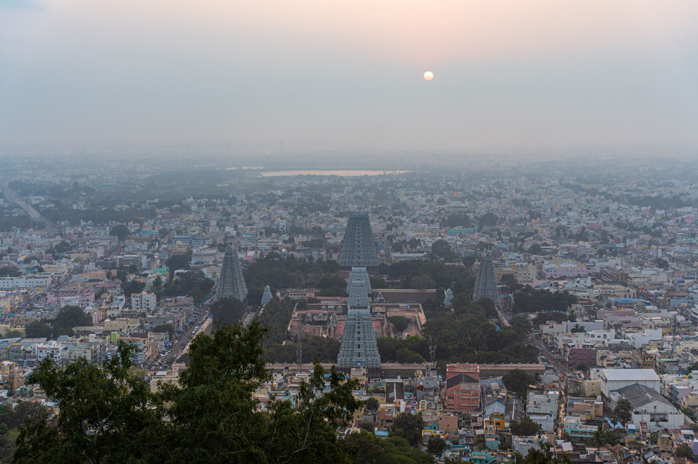
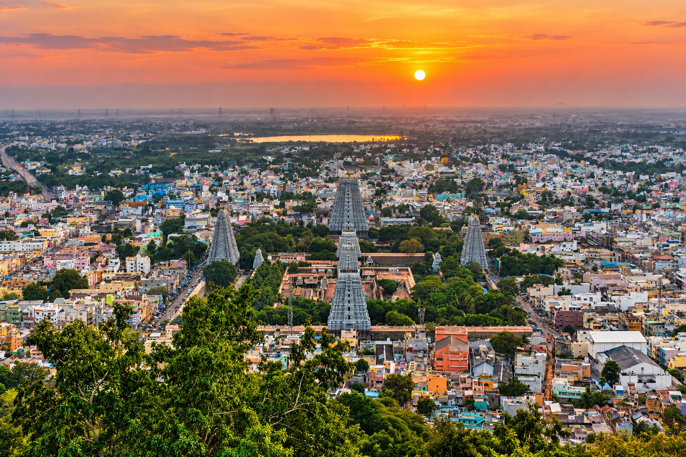

ROUTE HIGHLIGHT← Back to trips
3 DAYS • 2 NIGHTS
Tiruvannamalai Circuit
A relaxed pilgrimage circuit from Chennai with Arunachaleswarar Temple, optional Girivalam and a heritage stop at Gingee.

CHENNAI → TIRUVANNAMALAI CIRCUITTRIP GALLERY
Preview the route before you travel.
Add your own destination photographs to the four slots. The gallery automatically moves and can be swiped on mobile.
ROUND TRIP PLAN
A simple day-by-day travel chart.
Meal, restroom and room planning is included as a practical template. Exact stops and hotel names are finalised with the customer based on timing, budget and availability.
DAY 01
Chennai → Tiruvannamalai
Morning departure • breakfast/restroom stop • optional Gingee photo/heritage stop if timing permits • lunch • hotel check-in • evening temple visit
🍽 Highway breakfast + lunch • regular breaks🛏 Tiruvannamalai hotel — 1 night
DAY 02
Tiruvannamalai temple day
Early Arunachaleswarar Temple visit • breakfast • rest • optional Girivalam planning / selected local shrines • lunch • evening free time
🍽 Hotel breakfast • local lunch • tea/hydration🛏 Tiruvannamalai hotel — 2nd night
DAY 03
Tiruvannamalai → Chennai
Breakfast • check-out • optional final local stop • lunch en route • restroom break • Chennai arrival
🍽 Highway lunch + tea/restroom stop🛏 No room — return to Chennai
WHAT TO EXPECT
Stops built around your group.
The official Tiruvannamalai district site provides temple information; Gingee Fort visitor access and hours should be checked before adding it to the day plan.
✓ Arunachaleswarar Temple✓ Arunachala hill / Girivalam option✓ Gingee Fort optional stop✓ Local ashram / heritage visits
BOOKING NOTES
Make it your route.
- Choose 12–25 seater vehicle based on group size.
- Add room category and meal preferences in the booking request.
- Ask for a customised pickup, extra sightseeing stop or additional night.
- Temple timings, traffic, local restrictions and weather can change the sequence.
REQUEST A CALLBACK
Want us to call you?
Send your name and phone number with your preferred date. The request opens a ready-to-send WhatsApp message for the RG booking team.
✓ Customer number included✓ Vehicle / route included✓ Preferred date included